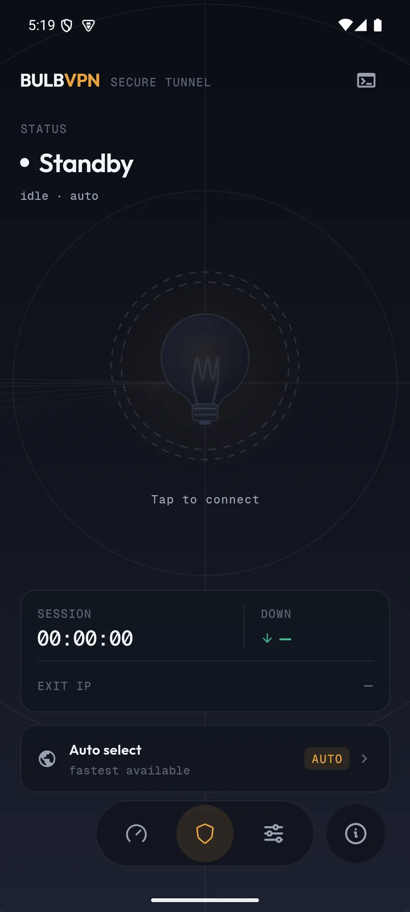
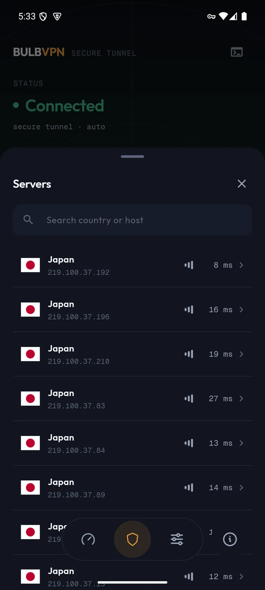
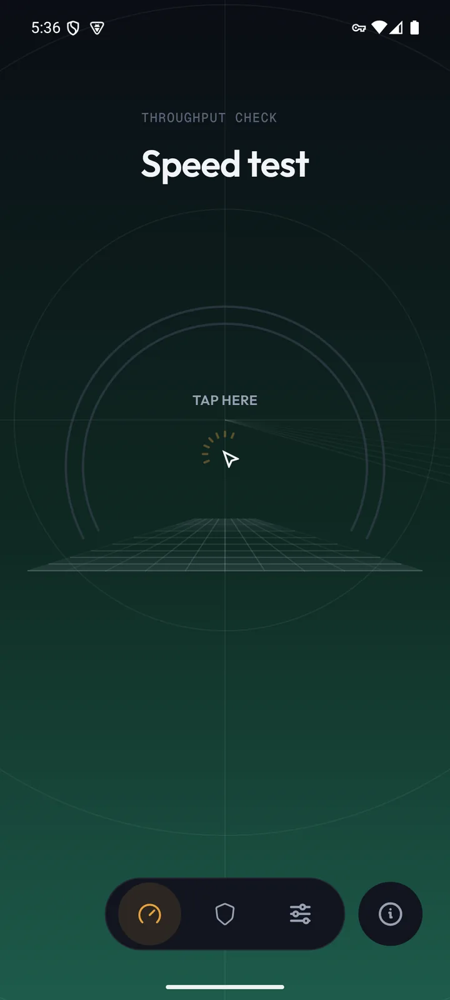
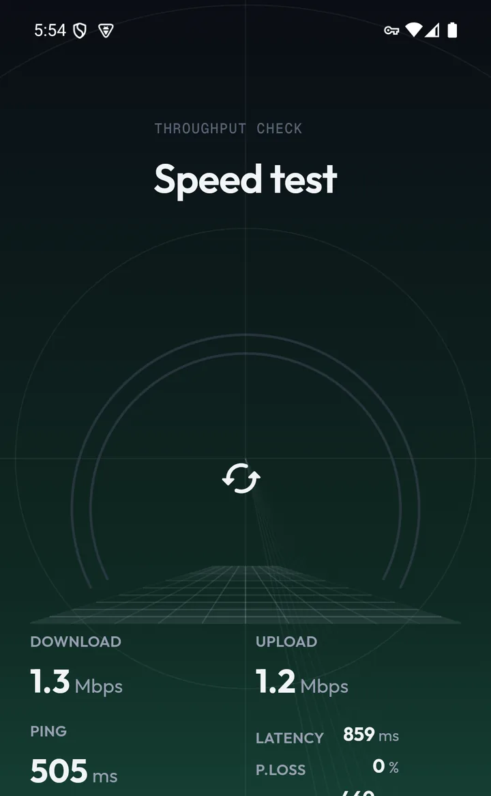
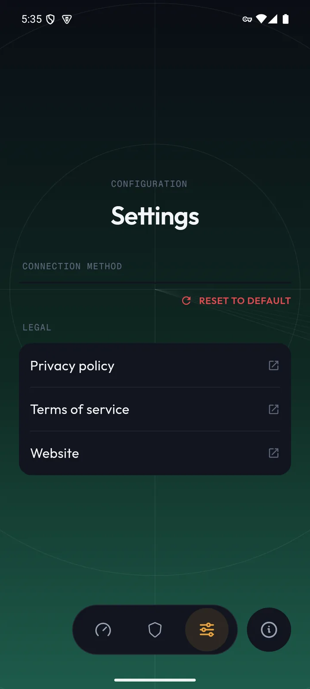

Four screens,
one button.
The Android build is deliberately short on menus. Home owns the tunnel and your exit IP; a bottom sheet owns the server list; speed and settings sit one tap away in the navigation bar.
Captured from a running build.
Not mock-ups — every frame below is a screenshot of the actual app connected to a live community endpoint on Android.






What each screen actually does.
A feature list you can verify against the screenshots above — and, if you want the implementation, against the source.
One control for the whole tunnel
Tap to connect, tap to disconnect. Around it: live connection state with staged statuses, the selected server pill, and — once the tunnel is up — the exit IP block with a copy action that confirms itself with a toast.
Proof, not a padlock
Country flag, public address, one tap to copy. A failed lookup leaves the slot empty rather than guessing.
The endpoint list
Flags, host names, countries and latency for every live community node — refreshed from the public mirror each time you open it.
Eight real measurements
Latency packets, staged download and upload passes against Cloudflare — reported as ping, jitter, packet loss, and throughput.
Instability is reported
If the connection degrades mid-test, the app says so instead of publishing an optimistic number.
A plain-text log, on the device
Initialization, server selection, handshake, state transitions, errors — appended line by line during the session and kept local. When something misbehaves, you can read exactly what the tunnel did, and share it in a bug report without exporting personal data.
Live community servers.
The list below is fetched live from the same public mirror the app uses — 96 nodes at last check, sorted by latency. Endpoints are run by the VPN Gate community; see the privacy policy for what that means for your traffic.
Download, or build it yourself.
Signed release builds will appear here when they are published. Until then the full source — Gradle project included — is on GitHub.